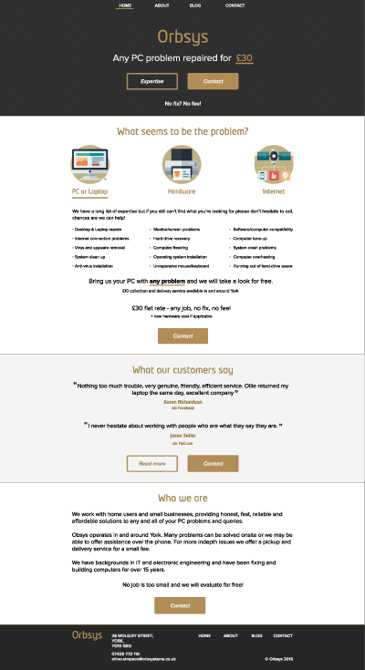
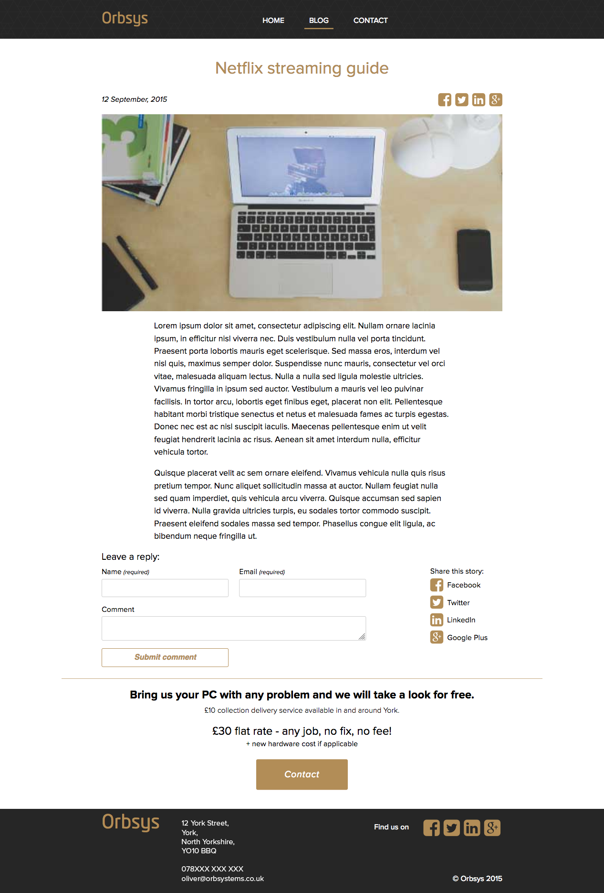

Background
OrbSys was a York based computer repair service, it's key selling points were a flat fee for repairs and travel to customers in the local area. I met Oliver, the sole proprietor of OrbSys, at a DotYork meet-up, where he told me he was starting a computer repair company in his spare-time and needed a website.
Brief
Oliver wanted a website to help grow his new business. He identified a gap in the market and wanted to provide a cheap and reliable service customers that weren't tech savvy. I also gave Oliver some ideas about how to market the company through the website with a blog, Facebook and local advertising.
Research
Discover
During our set-up meeting, Oliver and I completed a user requirements specification. We discussed single-page websites and agreed that this would be the way to go. Oliver showed me the marketing materials he already had (business cards etc). This added some design requirements as the website would need to fit the materials he already had.
The website would need to be responsive due to customers potentially not having a laptop/desktop available to them.
Using the user requirements specification we had completed, I began to construct a wireframe of the single-page website. I created a mood board using the business card as the basis for the design. I then used this mood board to design a mock-up in Adobe Illustrator.
Design and Development
As the website was fairly simple it allowed me time to experiment with newer technology, namely the (then) new CSS grid property.
Testing
I tested on a multitude of devices and asked a variety of people with different technical backgrounds to complete some tasks - contact the company, find reviews and find the phone number. Based on the feedback gained from this user testing I made adjustments to the layout to make these key jobs easier.
Outcomes
Oliver was really pleased with the design. The website did not require any maintenance from Oliver once launched so it allowed him to concentrate on other areas of the business.
 